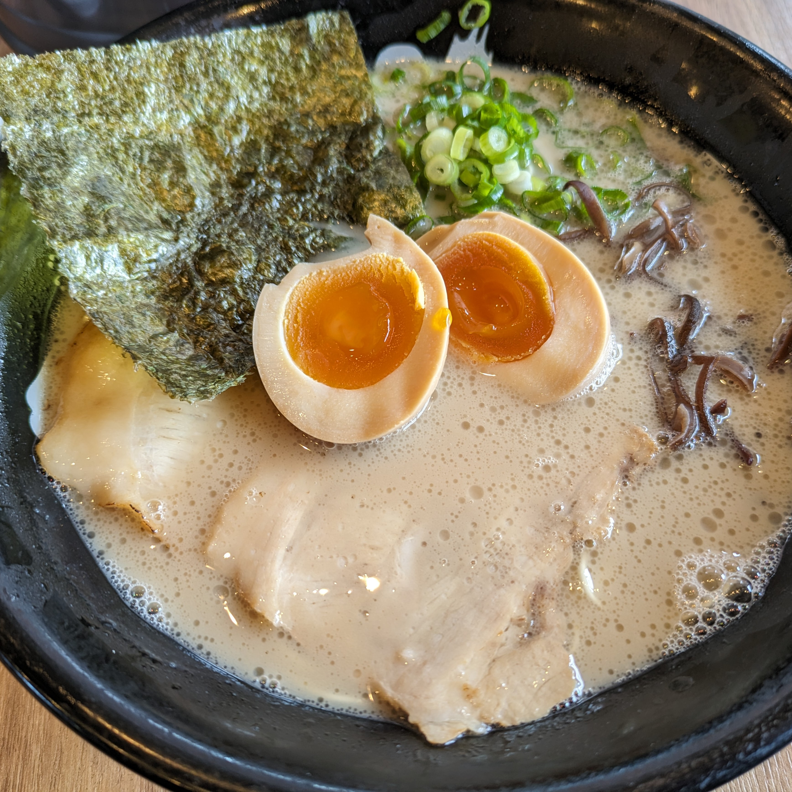

石田一龍本店
北九州にある石田一流本店。 濃厚な豚骨スープで臭みや癖がなく。 万人受けするラーメンである。 特にスープがおいしい。
北九州にある石田一流本店。 濃厚な豚骨スープで臭みや癖がなく。 万人受けするラーメンである。 特にスープがおいしい。
博多駅付近にある博多一双本店。 濃厚な元祖泡系豚骨スープでじっくり煮込んだ白濁スープは独特な臭みがあるがクリーミーな味わい。 臭みに耐えれる人ならいっぱい食べれば病みつきになる一杯。
京都駅から徒歩で行ける距離にある第一旭本店。 豚骨好きにもかかわらずそれに勝る醤油ラーメンで スープと麺の相性が抜群。

一条寺駅付近にある天下一品総本店。 天下一品総本店限定の牛筋キムチラーメンが人気商品で 柔らかく煮込んだ牛筋がとてもおいしい。 意外とラーメンとキムチの相性が合うので是非食べてほしい一杯。